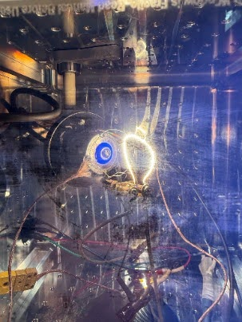
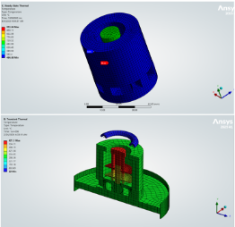
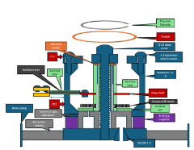

E-SPARK V1
A demonstrational Hall-Effect Thruster built in 10 weeks as an intern at NASA's Jet Propulsion Laboratory.
- Used scaling laws and first-principles to get initial dimensions.
- Fabricated the thruster and integrated it into a portable testbed.
- Measured discharge characteristics and performance metrics.
- Published and presented my work at SmallSat 2026 (Request paper).


